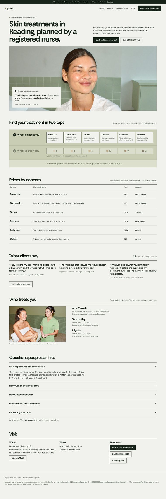
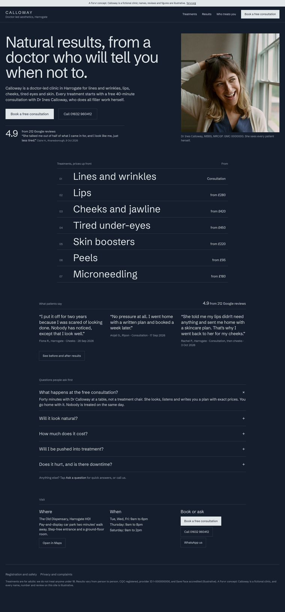
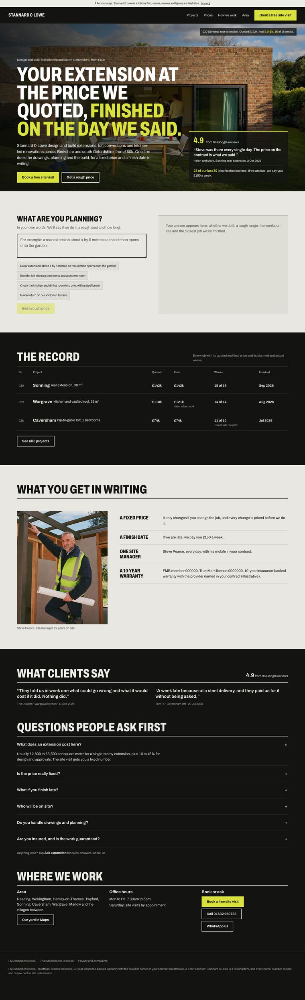

Why it is different
Most small business sites are a template with the logo swapped.
They look like everyone else in the area, load slowly and say very little. A Forvr site starts from the question a template cannot answer: what should this business's site actually do?
Then it is designed and coded by hand around that one thing. The photography, film and copy come from the same studio, so the site and the brand look like they came from one place, and you are not waiting on a photoshoot before you can launch.
Reading, Berkshire. In person around Reading, Henley and London, or remote.
Rory Wilkie designs and builds every site himself.
Enquiries. Fast, mobile first, and readable by Google, ChatGPT and AI search.

What is included
THE WHOLE SITE.
DESIGN
Structure, copy and look, worked out around one job before anything is coded.
- What the site has to do, and for whom
- Page structure and copy written for people and for search
- Imagery and film made in the same studio
BUILD
Hand-coded, so it is fast and cheap to run.
- Mobile first
- Motion and interaction where it earns its place
- You own the domain and the code
FOUND
Set up for Google and AI search from launch day.
- Titles, descriptions, structured data and sitemap
- Google Business Profile set up properly
- Tested with real customer questions in ChatGPT and Google every six weeks
ENQUIRIES
Built so a visitor becomes a booking, a call or a message.
- Booking, call and contact on the first screen
- Enquiries tracked, so you know what works
- Option to add an AI assistant that answers out of hours
Concept builds
THREE SITES.

Hover to scroll · click to openCALLOWAY
Doctor-led aesthetics, HarrogateReviews, prices and booking on the first screen. Every treatment says who it does not suit, and booking a free consultation takes five taps.
PATCH
Nurse-led skin clinic, ReadingTwo taps, what is bothering you and your skin type, and the answer arrives: what works, the price, the weeks, and results on skin like yours.

Hover to scroll · click to openSTANNARD & LOWE
Design and build, BerkshireDescribe the job in your own words and it says if they do it, a rough price that counts up and the weeks on site. Every job shows quoted against final.
Concept sites for made-up businesses, each live and working: open one and book, pick or plan. Names, reviews and figures are illustrative. Client sites shown on request.
Before you ask
QUESTIONS.
How much does a website cost?
Every website is priced in writing after a short call, once we know what the site has to do. When you get in touch, the form asks which budget band you have in mind, so we can tell you straight away what fits.
How long does a website take?
Typically two to four weeks from the first call to launch, depending on how much the site has to do and how quickly content and feedback come back.
Will my website show up on Google and ChatGPT?
Every site ships with the technical side done properly: page titles and descriptions, structured data, a sitemap, fast load times, a Google Business Profile set up properly and a plain-text summary AI assistants can read. Ranking also depends on reviews and on other sites mentioning you, so we tell you plainly what to do about those, and we test where you stand every six weeks. Nobody honest can guarantee first place.
Can you add an AI assistant to my website?
Yes. A chat assistant trained on your services, prices and questions can answer visitors at any hour and pass every enquiry to you. It can be built in from the start or added later.
Do you use WordPress, Shopify or Squarespace?
Most Forvr sites are hand-coded, which keeps them fast, secure and cheap to host. If you need a shop, or want to edit pages yourself every week, we talk through the right platform before anything is built rather than forcing one.
Do you build websites for any kind of business?
Yes. The current concept builds are a doctor-led aesthetics clinic, a nurse-led skin clinic and a design-and-build firm. Shops, cafes, trades, clinics and studios around Reading and Berkshire are all a fit.
Who will I actually work with?
Rory Wilkie, the founder of Forvr Studios. He designs and builds every site himself, so the person you brief is the person making the work. No account managers, no handoffs.
Where are you based?
Reading, Berkshire, in England. We meet in person around Reading, Henley-on-Thames and London, and work remotely with businesses anywhere in the UK.